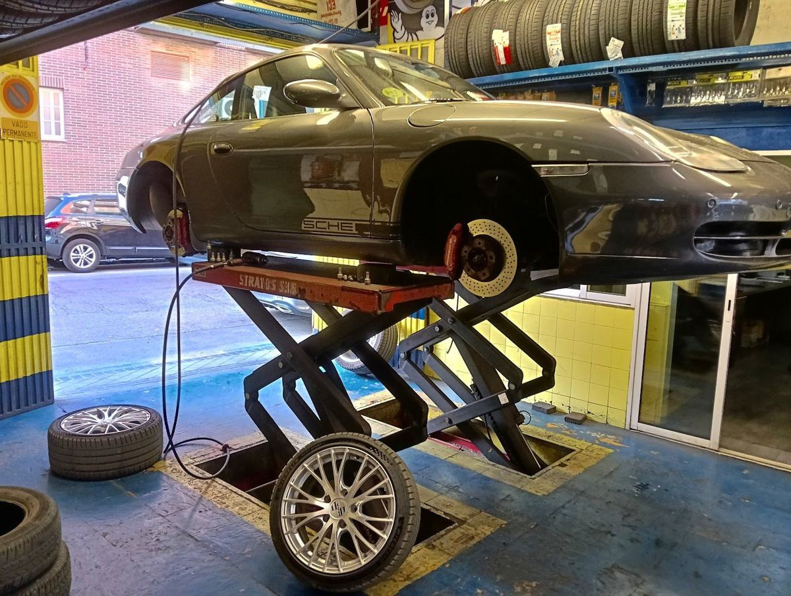
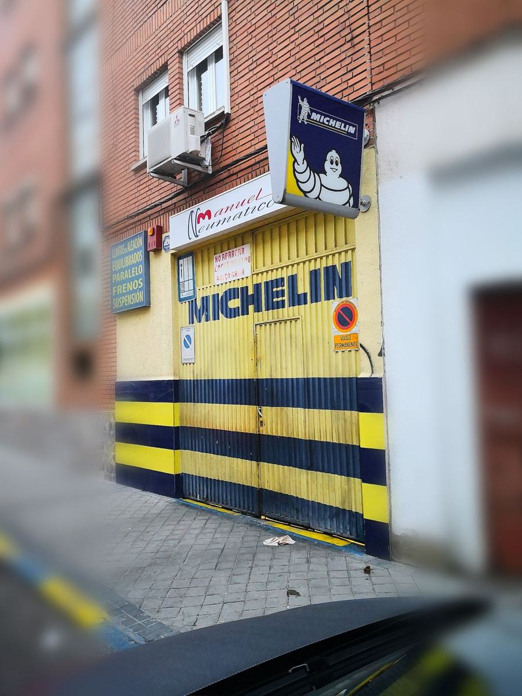
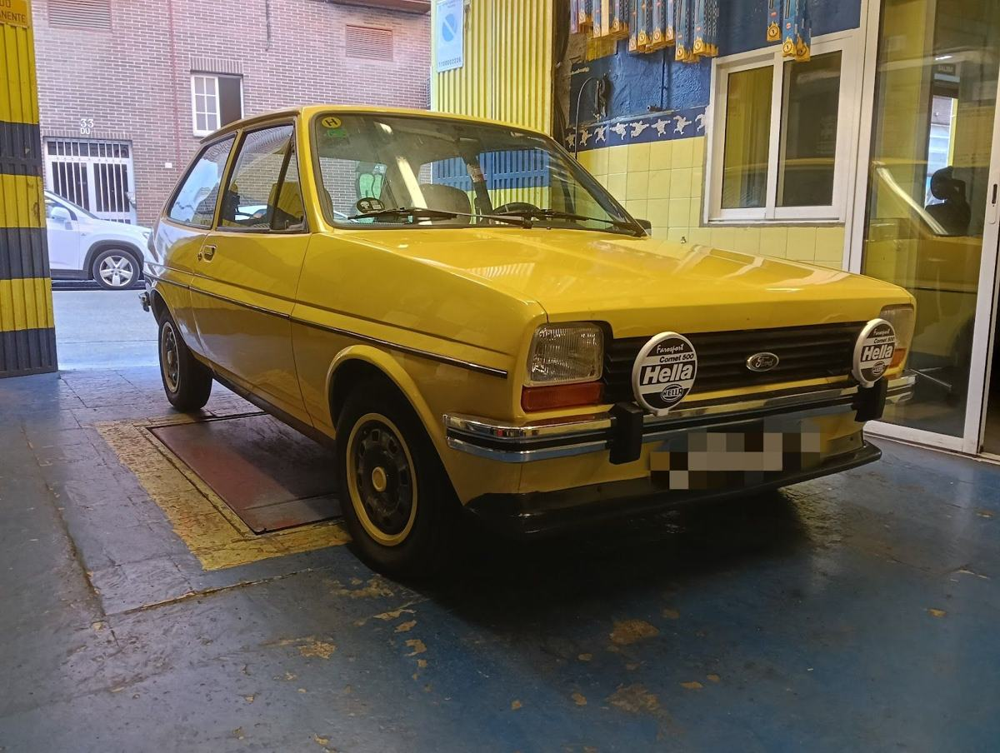
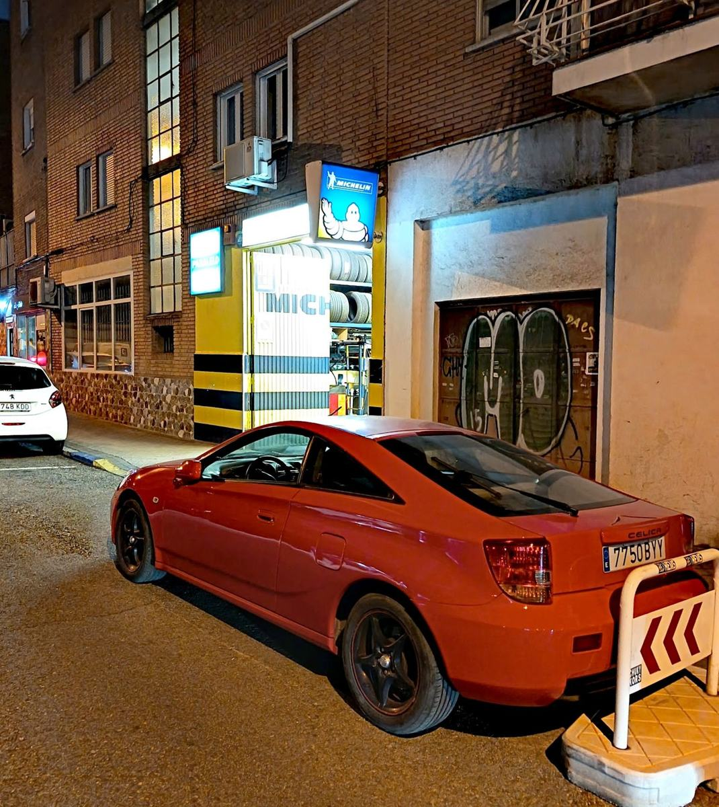
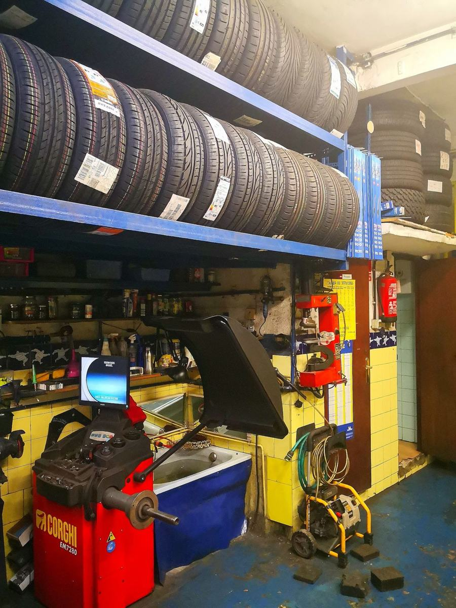

Ruedas, paralelo, frenos y suspensión en la calle Alfredo Aleix. Busca la fachada amarilla y azul.
4,7 · 218 reseñas en Google
| Lunes | 9:00–14:00, 16:00–20:00 |
|---|---|
| Martes | 9:00–14:00, 16:00–20:00 |
| Miércoles | 9:00–14:00, 16:00–20:00 |
| Jueves | 9:00–14:00, 16:00–20:00 |
| Viernes | 9:00–14:00, 16:00–20:00 |
| Sábado | Cerrado |
| Domingo | Cerrado |
C. Alfredo Aleix, 50
Carabanchel, Madrid

Dinos la medida de tu rueda (está escrita en el lateral, tipo 205/55 R16) y te damos precio por teléfono antes de venir.


